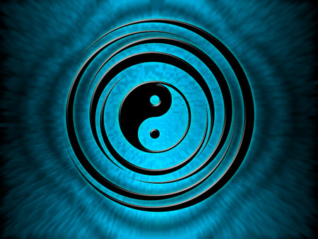

Dao des organes: énergétique et symbolique
En Médecine Chinoise, les Organes et Viscères sont reconnus et considérés comme des trésors que l’être humain peut entretenir et revitaliser par des pratiques, des aliments et des façons de vivre appropriés. L’énergie qui anime chacun de ces couples organe/viscère est, selon des caractéristiques bien précises, appelée modalité: Bois, Feu, Terre, Métal, Eau.
Foie/Vésicule biliaire
Le Foie a la charge de Général d’Armée, réflexions et projets en sortent » nous disent les textes.
En effet le Foie agit en Général à l’interne dans le sang qu’il détoxine (élimination des globules blancs et rouges usés, toxines, bactéries, médicaments, hormones thyroïdienne entre autres…) et ajuste en sucres et en fer afin de s’adapter à l’effort. Il agit de même à l’externe puisqu’il contrôle tout le système musculotendineux permettant de se mouvoir, d’agir, d’attaquer ou de fuir.Le Foie est associé en énergétique chinoise à l’élément Bois, élément des élans purificateurs (physiques comme psychiques : intention de se transformer par exemple) qui initie tous les renouveaux. Il est à l’origine de la force d’agressivité qui nous permet de gérer la pression et de nous affirmer. Contrariée, elle devient colère qui sera exprimée ou rentrée.
En tant que dépositaire et représentant de l’élément Bois, le Foie (organe yin) est couplé à la Vésicule Biliaire (organe yang).
Les textes indiquent: « La Vésicule Biliaire à la charge de la rectitude du centre, les décisions et jugements tranchés en sortent ». En tant que yang du Bois elle en est l’organe le plus agissant: elle nous donne la bravoure et le pouvoir de décider de notre vie !
Si la vésicule est faible il y aura indécision, incapacité à trancher et pas d’élan pour se réaliser, peu de courage; en excès elle donnera un tempérament dominant, à la critique facile et qui tend à décider pour tout le monde autour.Les symptômes d’une Vésicule perturbée sont très variés: migraines, problèmes occulaires, hypertension, calculs, cervicalgies, troubles thyroïdiens…etc. D’où l’intérêt d’une clarification et de pratiques pour entretenir sa juste physiologie sur tous les plans : elle est un viscère particulièrement essentiel à tout travail de transformation personnelle.
Coeur/Intestin grêle
« Le Coeur a la charge de Prince Maître » nous disent les textes. Il est le réceptacle du Shen (conscience ou esprit individuel) c’est à dire de toutes les forces configuratrices de l’individu. Il est le témoin silencieux de chaque instant sans cesse renouvelé. Les taoïstes lui reconnaissent la qualité de pouvoir être vide (Xu) donc de tout accueillir.
Le Coeur est reconnu et décrit comme l’organe moteur du système cardio vasculaire: il propulse le sang à travers des milliers de kilomètres de vaisseaux sanguins et il est merveilleusement conçu pour accomplir cette tâche. En circulant dans tous les tissus du corps, le sang fournit les nutriments et l’oxygène au liquide interstitiel puis aux cellules. En même temps il recueille les déchets, le CO2 et la chaleur.
En Energétique Chinoise, le Coeur est associé à l’élément Feu qui est le seul élément pur que l’on ne peut pas polluer (à la différence de l’Air , de la Terre…) d’où son importance primordiale dans la physiologie du corps mais aussi dans les qualités qu’il apporte au niveau émotionnel et psychique.
Ces contenus peuvent être contactés et le plus possible transformés afin d’accéder aux qualités rayonnantes du coeur: la joie, la sérénité, la présence à soi et aux évènements de la vie en conscience …
En tant que dépositaire et représentant de l’élément Feu, le Coeur (organe Yin) est couplé à l’ Intestin Grêle (organe Yang).
L’Intestin Grêle de part sa structure (sa longueur, sa muqueuse, les sucs pancréatiques et intestinaux) est particulièrement bien adapté à la digestion et à l’absorption des nutriments (glucides, lipides, protides, eau, vitamines, électrolytes).
Il aide le Coeur en gérant (et en di-gérant) le trouble provenant de l’alimentation, de l’émotionnel, et des pensées qui pourrait venir parasiter le Coeur.
L’Intestin Grêle peut avoir une mauvaise motilité, vitalité (plan physiologique) ou être encombré de mémoires de tristesse de séparation (l’Intestin est situé autour du nombril: lieu de rupture du cordon ombilical..: plan émotionnel) ou contenir des concepts mentaux rigides (discrimination excessive). Il est alors essentiel de rencontrer ces contenus et de les clarifier.Rate/Estomac
« La Rate a la charge des greniers et des entrepôts. les cinq saveurs en sortent » nous disent les textes.
La Rate apporte au corps ce dont il a besoin en assurant le rôle de mère nourricière: elle l’entretient, le nourrit, et lui donne forme en tirant l’énergie et les saveurs des aliments digérés par l’estomac, le duodénum et les intestins. Elle est en lien direct avec l’appétit, la digestion et le métabolisme.
Elle a également un rôle important vis à vis du sang qu’elle élabore, emmagasine, transporte et libère en cas de besoin ( ex: pendant une hémorragie ou un sur-effort) et vis à vis de l’immunité en produisant des lymphocytes B qui donnent les anticorps et qui phagocytent les bactéries, les globules rouges endommagés ou usés et les plaquettes.
La Rate est associée en énergétique chinoise à l’élément Terre, élément caractérisé par la tranquilité, la stabilité, le liant et la capacité de nourrir. Elle permet de construire un bon lien avec le corps en donnant la capacité de le sentir (lien avec le schéma corporel), de savoir répondre à ses besoins (comme une bonne mère vis à vis de son enfant) en prenant soin de soi le mieux possible sur les différents plans: physique, émotionnel et psychique. Une bonne Rate permet de savoir se nourrir en s’imprégnant de bonnes saveurs, de bons moments sensoriels et sensuels, ou d’expériences et apprentissages de la vie. Elle a donc un grand lien avec le relationnel et elle donne la capacité de nourrir une relation avec douceur, gentillesse, tendresse et patience.
Mais comme tout organe, la Rate peut contenir des empreintes qui la troublent et qui influencent nos perceptions dans la conscience de soi et dans le monde relationnel (projections, illusions…), d’autant plus qu’elle représente aussi le lien avec la mère qui fut le premier lien nourricier. Seulement, ce lien a pu être vécu comme absent ou encore enregistré comme non nourricier, ou envahissant.
En tant que dépositaire et représentant de l’élément Terre, la Rate ( organe Yin) est couplée à l’Estomac ( organe Yang). L’Estomac aide la Rate dans le processus de digestion en sécrétant des sucs et des enzymes.
Les états de stress et d’agitation peuvent considérablement dérégler cet organe en enflammant par exemple ses muqueuses (ulcère, reflux gastrique…) et en lui donnant une difficulté à digérer les aliments mais aussi les évènements, une parole entendue….
Poumon/Gros intestin
Les Poumons ont la charge de « Premier Ministre, le gouvernement et la mesure en sortent » nous disent les textes. Ils sont les maîtres du Qi (ou énergie ) et ils assurent une justesse dans tous les échanges énergétiques du corps.
En effet, par la respiration, ils sont responsables de l’oxygénation du sang et de l’évacuation du CO2 et des différents gaz qui pourraient l’intoxiquer (ex:vapeurs d’alcool). Ils gouvernent et propulsent le Qi dans tous les méridiens du corps au rythme de la respiration. Par ce lien avec tout le système énergétique, ils donnent au corps cette grande capacité défensive face à des agressions externes (bactéries, virus, froid, vent…): ils sont donc en lien étroit avec le système immunitaire.Les Poumons sont liés à l’élément Métal, élément souvent mal perçu et mal compris dans notre société. En effet c’est lui qui amène les capacités de trancher avec tout ce qui n’est plus juste pour soi (relation, travail, comportements…), de délimiter un espace physique, émotionnel et psychique (processus qui permet de construire une identité) et d’incarner les énergies dans la matière (concrétiser un projet en acceptant de bien voir chaque étape par lesquelles cela doit passer y compris les étapes plus contraignantes, désagréables mais nécessaires si l’on ne veut pas rester sur le plan du rêve..).
En tant que dépositaire et représentant de l’élément Métal, le Poumon ( organe Yin ) est couplé au Gros Intestin ( organe Yang ).
Le Gros Intestin assure la fonction d’élimination. Parmi ses symptômes on retrouve les déséquilibres suivants: constipation, diarrhée, hémorroïdes…, sur le plan émotionnel, on retrouve souvent les peurs de clôturer une situation, la difficulté à accepter les changements (la vieillesse, la mort..)…, et sur le plan mental, on peut rencontrer de fortes résistances par l’entêtement, et les croyances rigides…Il est alors essentiel de prendre conscience de ces différents contenus, et de peu à peu les alchimiser.Rein/Vessie
L’Occident reconnaît et décrit avec précision la physiologie des Reins dans leurs fonctions de filtration des toxines et électrolytes du sang, de gestion des situations d’urgence par les systèmes cortico et médulo-surrénaliens (qui gèrent entre autres Adrénaline et Noradrénaline, Cortisol) et les associent ainsi à la force de notre constitution physique et notre capacité à gérer les situations de stress (en témoigne l’expression « d’avoir les reins solides »).
Pour l’Orient, ces organes qui sont les moins accessibles anatomiquement (ce sont les plus profonds) appartiennent au mystère (Xuan): ils détiennent le secret de notre origine, de notre destinée (Ming Men) et de tous nos potentiels de vie…
Dans leurs importantes fonctions, ils sont sources de notre énergie vitale, de notre capacité d’adaptation, de ressourcement, et de notre créativité (au sens propre par l’énergie sexuelle qu’ils distribuent: le Feu des Reins, comme au figuré par notre pouvoir de puiser dans nos potentiels pour créer, nous renouveler dans nos activités).
Liés à l’eau et à ses nombreuses qualités, dont la principale est l’adaptabilité, les Reins gouvernent et ajustent également les grands cycles du corps à travers le système endocrinien; ils assurent donc un juste équilibre du cycle féminin, des rythmes d’éveil et de sommeil (temps de repos et qualité de la récupération), et garantissent un équilibre profond et une réserve d’énergie suffisante pour faire face aux changements et transformations que la vie nous propose: déménagements, situations d’urgence, confrontation à la mort, deuils, peurs profondes….
Ainsi un Rein en vide d’énergie , encombré par trop de mémoires ou épuisé par des rythmes de vie qui n’apportent pas un ressourcement véritable va entraîner divers symptômes sur les différents corps: problèmes lombaires, articulaires (douleurs persistantes malgré tout traitement, arthrites,arthroses), hormonaux, plus de libido (par manque d’énergie sexuelle), panique, peurs irraisonnées, difficulté à s’adapter à tout changement, fatigue profonde, perte de contact avec son identité profonde et son intention de vie…
Article écrit par Christine Luttrin et Alexandre NEEL, voir le site:
http://www.lessenceducorps.com/dossier/energetique-et-symbolique-des-organes/